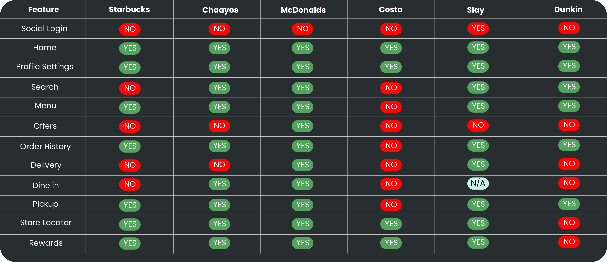
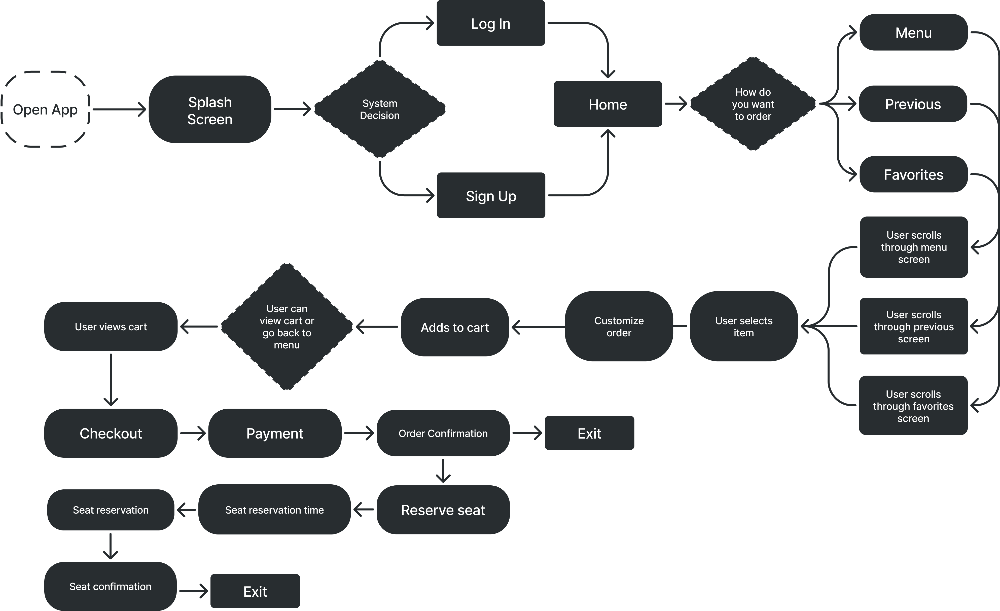
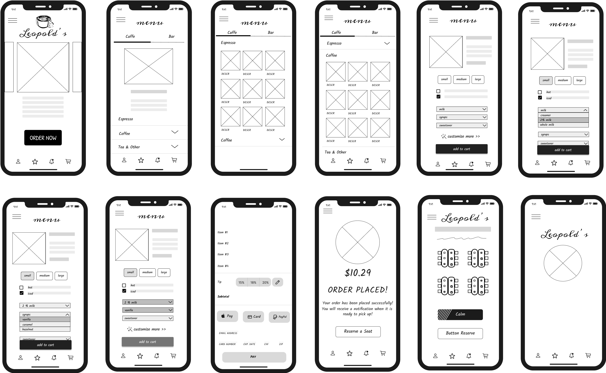
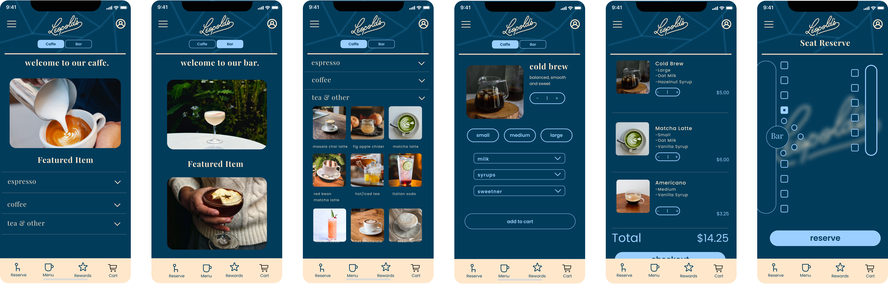
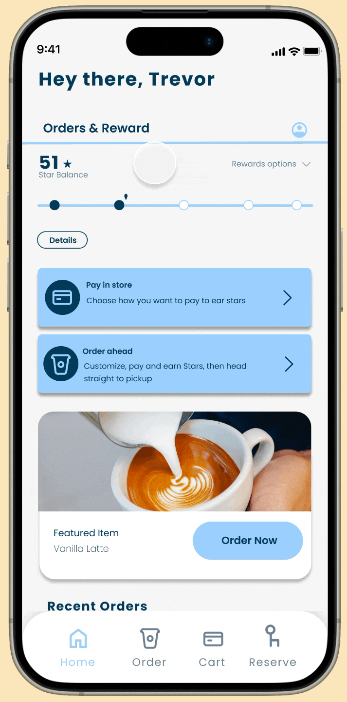
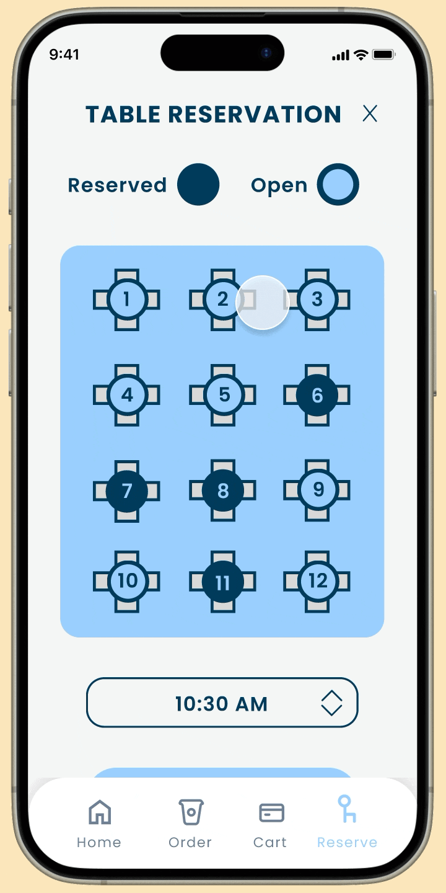
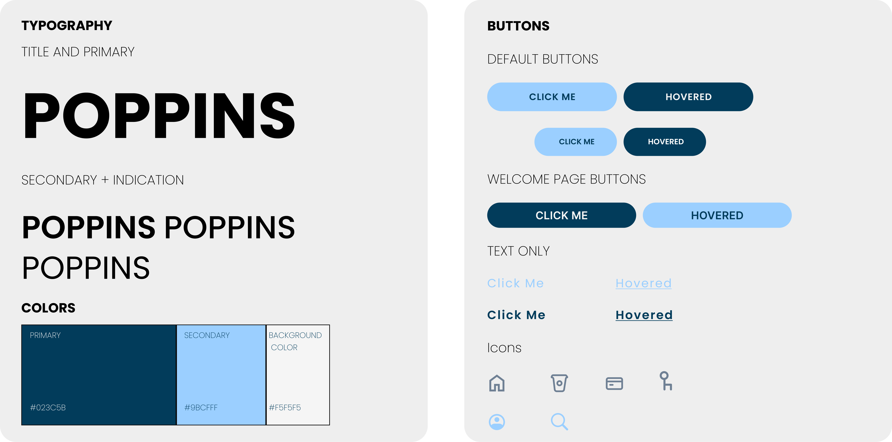

I started with paper wireframes to explore layout ideas for ordering, customization, and table reservations. This helped prioritize key features like simplified navigation and the table reservation based on user pain points.
I then created digital wireframes to map out user flows and structure. Features like scrollable menus and clear reservation options were designed to align with user needs before moving into testing.

After finalizing core features through wireframes, I moved into high-fidelity prototyping using Figma. These screens brought the app to life with full visuals and interactions that reflected Leopold’s dual identity as both a café and a bar. I designed detailed mockups for each stage of the user journey—from login and ordering to checkout and table reservation—ensuring every screen was intuitive and aligned with user needs.

With the prototype complete, I conducted two rounds of usability testing to uncover layout and navigation issues. Users struggled with the hamburger menu, dense menu layout, and unclear reservation flow. Based on this feedback, I removed the hamburger menu in favor of a search bar, simplified the menu into horizontally scrollable rows, and refined the bottom navigation for easier access to key actions.
To better align with user expectations, I overhauled the UI and introduced a cleaner, more intuitive design. I also developed a new style guide that focused on simplicity, clarity, and ease of use— ensuring a visually cohesive and user-friendly experience throughout the app.

User testing revealed that the order screen needed to be more efficient and personalized. Users wanted quick access to favorites and previous orders, as well as a search bar to easily find items—replacing the hamburger menu for a more streamlined experience.

User interviews and testing revealed a desire for more engagement, leading to the addition of a home screen point system. Users earn points for ordering, reserving, and referrals—encouraging repeat use and loyalty.

Testing also revealed the need to specify start and end times for table reservations; furthermore, a simpler UI using numeric table labels rather than the café’s floorplan proved far more navigable for users.
